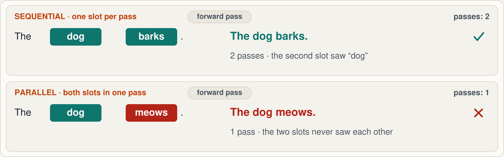
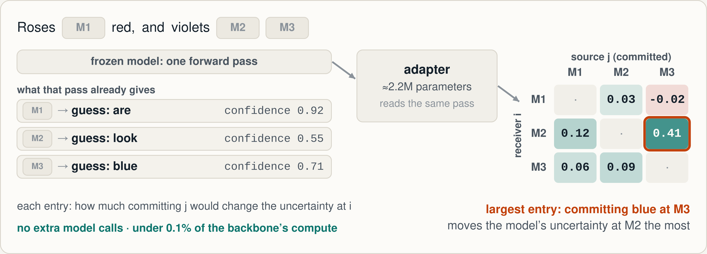
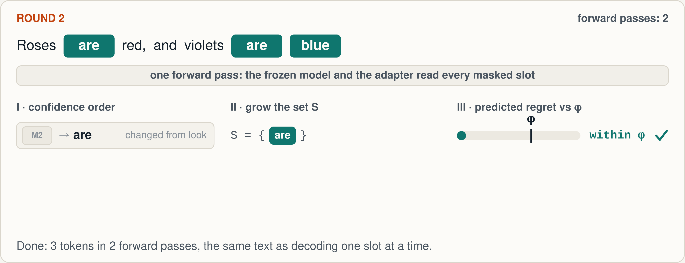
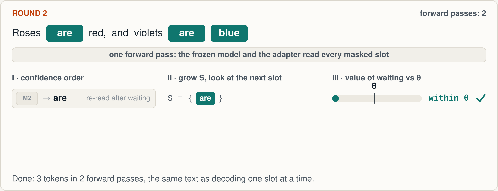
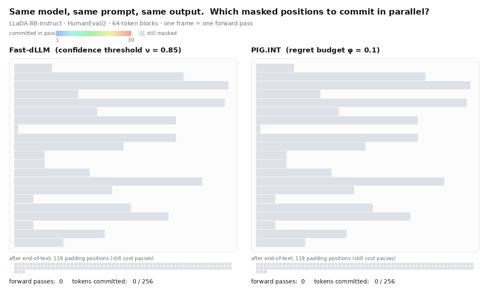
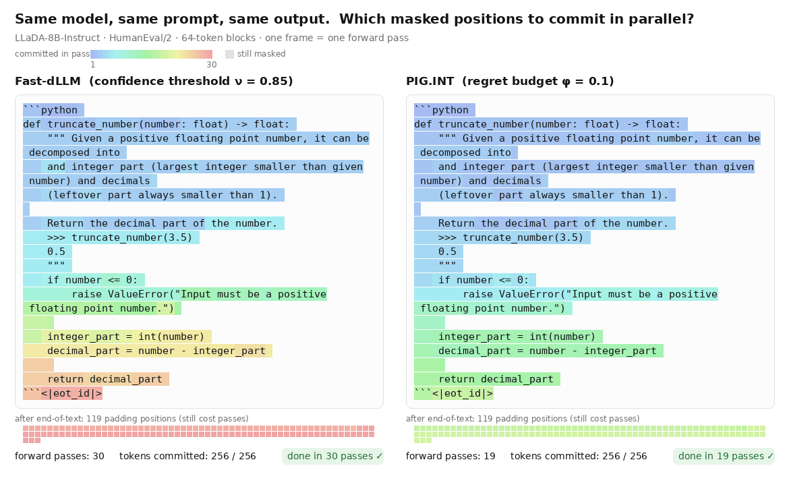
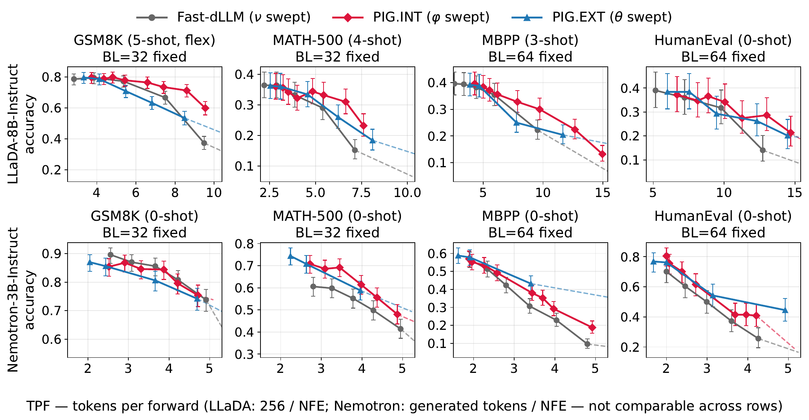
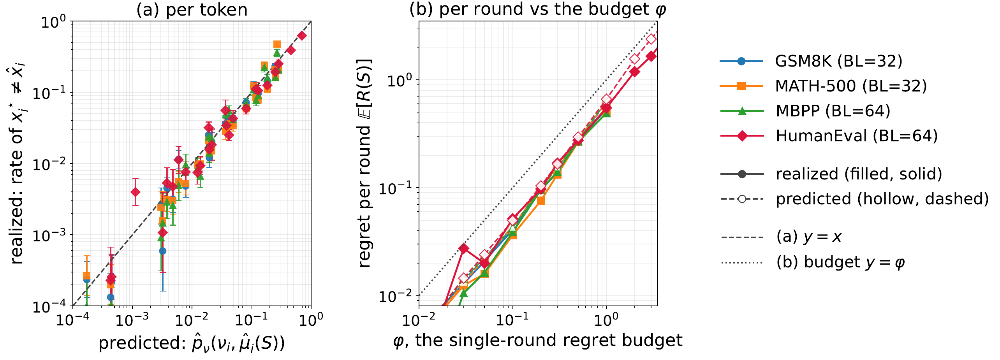
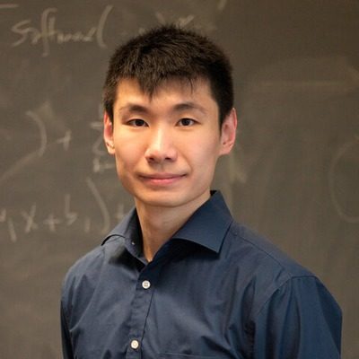

arXiv 2610.17375 · 2026
Commit tokens in parallel only while they are predicted to match what decoding them one at a time would give.
Quentin Fruytier · Anton Xue · Sanjay Shakkottai · Sujay Sanghavi
The University of Texas at Austin
The promise, and the gap
Confidence threshold · Fast-dLLM’s rule
2–3×
tokens per forward pass in Nemotron-Labs-Diffusion’s own diffusion mode: 1.9× at 3B, 2.6× at 8B, 2.7× at 14B (ten-benchmark averages)
Oracle · same 8B model, block 32
7.6×
when an oracle picks the commits that reproduce one-slot-at-a-time decoding exactly. Nemotron’s verdict: confidence sampling is “far from optimal”.
Headline speedups add machinery beyond the sampler: Nemotron’s 6× lets its AR mode verify diffusion drafts, and DiffusionGemma’s ~20 tokens per pass comes after retraining with sampler distillation and RL (up from 5).
Speed is tokens per forward pass (TPF): higher is faster. PIG is a better sampler for a frozen model.
Fu et al. 2026 (Nemotron-Labs-Diffusion), Tables 5 and 7, §4.2 (oracle on SPEED-Bench) · DiffusionGemma Team 2026, §5
2
The catch
Each slot is plausible on its own; the pair is not. Probabilities are illustrative (after the paper’s dog / cat example).
PIG · arXiv 2610.17375
3

The paradigm
Confidence
Commits every slot the model is sure of, many per pass.
On its own: blind to coupling. Two confident slots can still contradict each other.
+
Valid joint sampling
Each token sees the ones before it, so the text is a valid sample of the model’s joint distribution. Independence rules (DAPD, DEMASK) only test that slots look uncoupled.
On its own: one token per pass.
→
Trajectory tracking · PIG
Commit in confidence order, as many slots as keep the output equal to the sequential decode.
Observable target: replay any set one slot at a time and check whether a token changed.
Matching the sequential trajectory asks for more than independence, and decoding one slot at a time supplies the labels. Parallel decoding becomes a supervised task.
Wu et al. 2025 (Fast-dLLM); Kim et al. 2026 (DAPD); Ringel et al. 2026 (DEMASK)
4
The objective
maximise |S| subject to R(S) ≤ φ
R(S) = the number of slots in S whose parallel token differs from the token sequential decoding would give. Computing it exactly costs |S| extra passes.
Idea 1
Scan masked slots by decreasing confidence. The only decision left is where to stop.
Idea 2
A slot flips only if the set moves its distribution past its top-1 margin: confidence gives the margin, pairwise effects give the push.
PIG · arXiv 2610.17375 · Section 3
5
The estimator
Entry (i, j) ≈ entropy at i now − entropy at i after committing j · values from the paper’s Figure 4
6

Decoder 1 · single-round regret
The paper’s Figure 2 example, played through to the end · φ = single-round regret budget
7

Decoder 2 · cross-round regret
Paper’s Figure 3 example · value of waiting: how much the next slot’s risk drops if S commits first
8

A real decode · LLaDA-8B-Instruct, HumanEval

30
passes · Fast-dLLM
19
passes · PIG.INT
Same model, same prompt, identical program. Each frame is one forward pass; colour marks the pass that committed the token.
All 164 HumanEval problems at this setting: 7.2 vs 10.1 tokens per pass, 36% vs 34% pass@1 (64-token blocks)
9

Results · four benchmarks, two model families

1.7×
up to Fast-dLLM’s tokens per pass at matched accuracy, LLaDA-8B
1.4×
over Nemotron’s native confidence decoder
+28
accuracy points kept at the baseline’s fastest settings
Accuracy vs tokens per forward pass (up and right is better) · Wilson 95% bars · one adapter per model
10
Audit · replaying every committed set one slot at a time

LLaDA-8B-Instruct · (a) per token, on the diagonal · (b) per round, below the budget φ at every setting
11
Takeaways
Control disagreement with sequential decoding, not a proxy for independence.
A 2M-parameter adapter on the frozen model, trained once per backbone.
Up to 1.7× Fast-dLLM on LLaDA and 1.4× Nemotron’s own decoder.
arxiv.org/abs/2610.17375
github.com/Quentin-Fruytier/PIG-DLM-release
huggingface.co/UT-IFML
LLaDA-8B-Instruct-PIG · Nemotron-Labs-Diffusion-3B-PIG
Joint work with

Anton Xue
Sanjay Shakkottai
Sujay Sanghavi
The University of Texas at Austin
Backup · the estimator’s adapter
Architecture
Frozen DLM, the one forward pass
per slot: last hidden state, token id, entropy, confidence, margin, decode fraction t · attention maps of this round and the last
↓
Adapter · the only trained part
Embed each slot into 192 dimensions
Mix with 2 transformer layers over the canvas, conditioned on t, with a bias read from the model’s attention
Read out a directed score per pair:f(zi)⊤ W g(zj) + bij
↓
All 256 × 256 pairwise effects, in the same pass
under 0.1% of a backbone pass · 12.8 ms per round on an H100
Training, offline
1
Harvest states. Decode training-split problems (GSM8K, MATH, OpenCoder, MBPP) with the frozen model; snapshot every 24 commits. 34,142 states from 3,721 problems.
2
Label exactly. Commit one slot j and re-run the model: one extra pass gives a whole column of true effects. 24 slots per state (16 most confident, 8 random): 111M labelled pairs.
3
Fit. Huber loss on the labelled entries only, split by problem. Per-pair correlation 0.83 on validation, about 0.8 on the test benchmarks.
4
Calibrate. Replay candidate sets one slot at a time; a frozen table turns (confidence, coupling) into the chance a token differs from sequential decoding.
LLaDA-8B-Instruct shown · Nemotron-3B twin: same recipe within one block, validation r = 0.79
B1